Radar pour l’auscultation de structures de génie civil
Banc expérimental GPR
10 octobre 2026
ANR HEAT COFFEE

ANR HEAT COFFEE, tâche 2
Radar pour l’auscultation de structures de génie civil
Franck Daout (SATIE), Philippe Forster (SATIE), Yasaman Momeni (SATIE)
Tien Anh NGuyen (SATIE), Williams Kouassi (LEME), Eric Vourc’h (SATIE)
Mission principale
Plan
- Présentation du contexte de l’ANR HEAT COFFEE - Tache 2
- Présentation du banc expérimental GPR
- Démarche expérimentale
- Missions secondaires
Présentation du contexte de l’ANR HEAT COFFEE - Tache 2
Objectif général
Problématique :
Sonder les structures de génie civil et les milieux géotechniques (bétons etc.) sur des profondeurs significatives
Objectif : estimer les dimensions du milieu sous test, détecter, voire localiser des inhomogénéités
Solution proposée :
- Système Radar (de type GPR : Ground Penetrating Radar)
Radar pour l’auscultation de structures de génie civil — Contexte applicatif
Fondation de pylône électrique
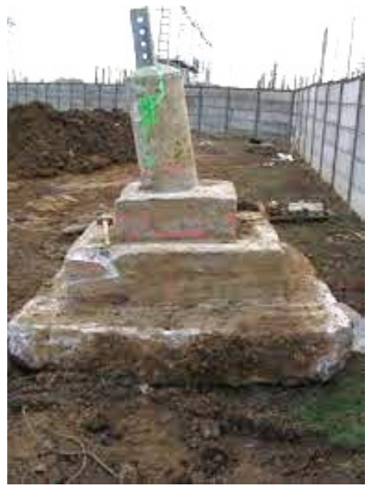
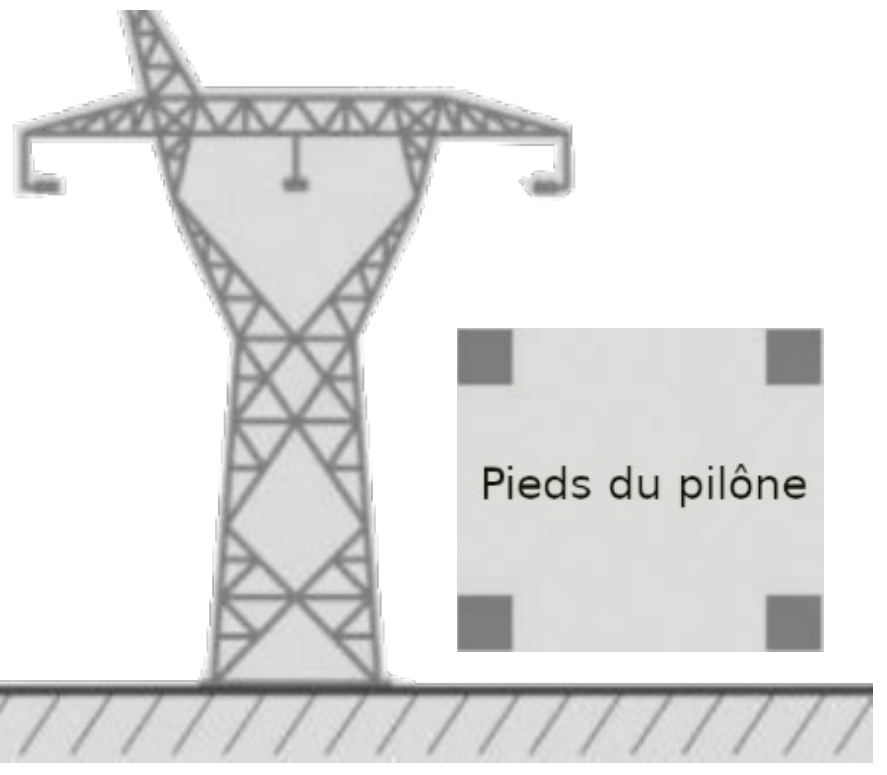
Résolution spatiale souhaitée \(\sim 20\) cm
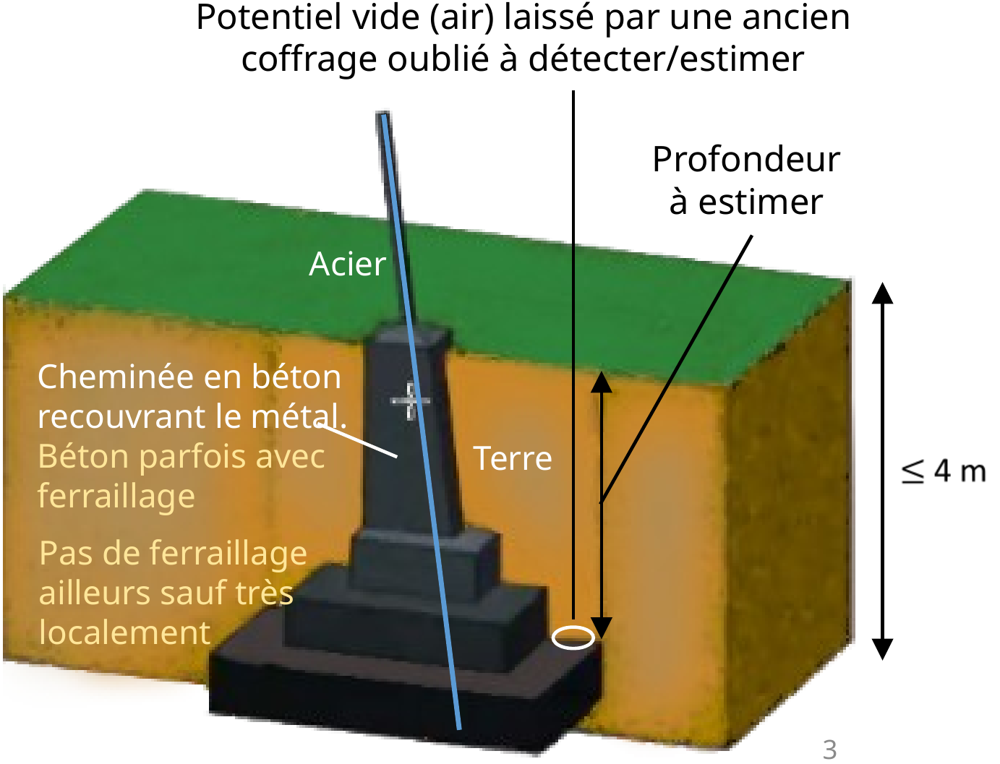
Radar pour l’auscultation de structures de génie civil
Principe du radar :
Système GPR (Ground Penetrating Radar) en configuration bistatique (émetteur et récepteur séparés)
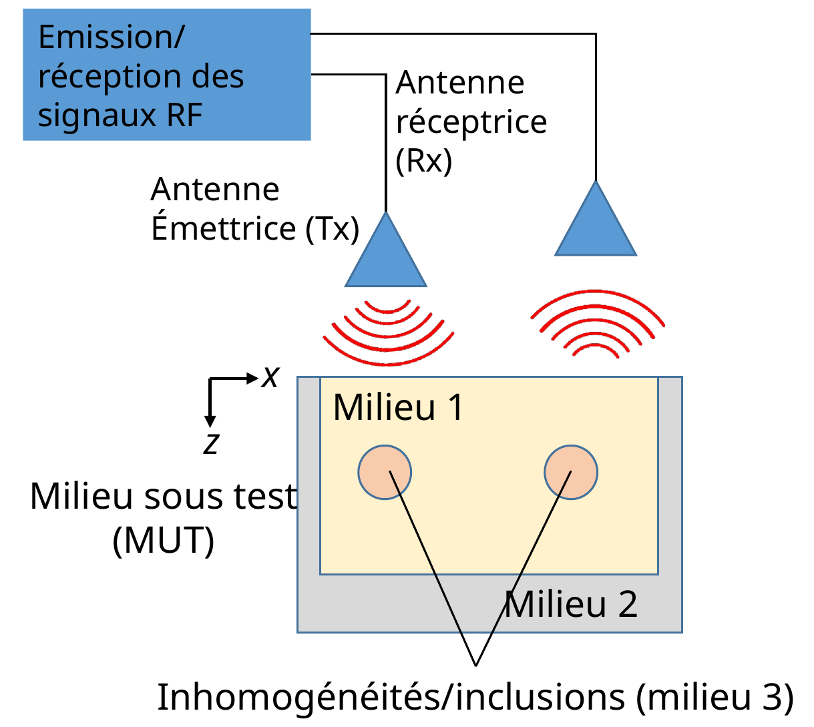
Bibliographie sélective sur le GPR pour le génie civil et la géo-physique :
Spears, M., Hedjazi, S., & Taheri, H. (2023). Ground penetrating radar applications and implementations in civil construction. Journal of Structural Integrity and Maintenance, 8(1), 36-49.
Wang, S., Liu, G., Jing, G., Feng, Q., Liu, H., & Guo, Y. (2022). State-of-the-art review of ground penetrating radar (GPR) applications for railway ballast inspection. Sensors, 22(7), 2450.
Klewe, T., Strangfeld, C., & Kruschwitz, S. (2021). Review of moisture measurements in civil engineering with ground penetrating radar–Applied methods and signal features. Construction and Building Materials, 278, 122250.
Lai, W. W. L., Derobert, X., & Annan, P. (2018). A review of Ground Penetrating Radar application in civil engineering: A 30-year journey from Locating and Testing to Imaging and Diagnosis. Ndt & E International, 96, 58-78.
Economou, N., Benedetto, F., Bano, M., Tzanis, A., Nyquist, J., Sandmeier, K. J., & Cassidy, N. (2017). Advanced ground penetrating radar signal processing techniques. Signal Processing, 132, 197-200.
Venkateswarlu, B., & Tewari, V. C. (2014). Geotechnical applications of ground penetrating radar (GPR). Jour. Ind. Geol. Cong, 6(1), 35-46.
Olhoeft, G. R. (2000). Maximizing the information return from ground penetrating radar. Journal of Applied Geophysics, 43(2-4), 175-187.
Applications : agriculture, analyse des sols (humidité, porosité, biomasse…), archéologie, génie civil…
Radar pour l’auscultation de structures de génie civil
L’instrumentation
- Choix des fréquences et forme des signaux
- Topologies possibles du système de capteurs :
- Géométrie mono-statique (Tx-Rx = même antenne) ou quasi-monostatique (Tx-Rx = deux antennes proches…)
- Géométrie bistatique (Tx et Rx séparés)
- Système MIMO (multi Tx et/ou Rx)
Le traitement du signal (algorithme…)
- Faire une image du milieu sous test (MUT) à partir des mesures de signaux RF
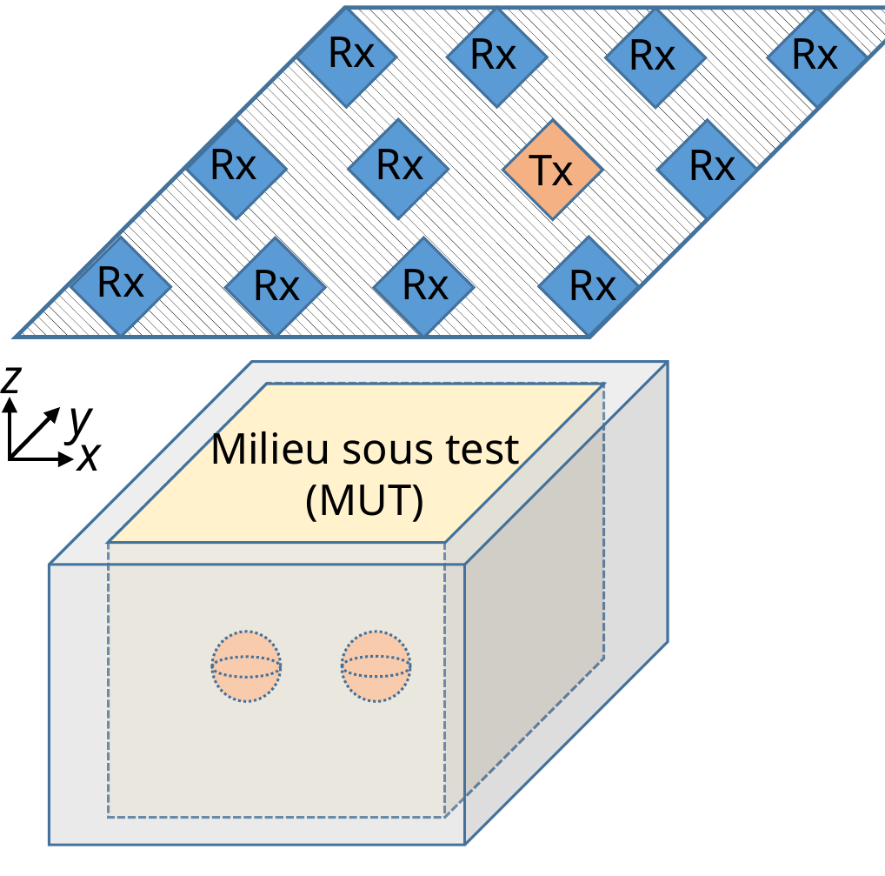
Radar pour l’auscultation de structures de génie civil
Le caractère stratégique du choix des fréquences : \(f \in [100\,\text{MHz}, 20\,\text{GHz}]\)
Pour un milieu sous test donné (permittivité diélectrique \(\varepsilon_r(f)\)) :
- Plus \(f_0\) (fréq. porteuse) est élevée, plus la portée est faible (atténuation des signaux…)
- Plus \(\Delta f\) (bande passante) est large, meilleure est la résolution spatiale
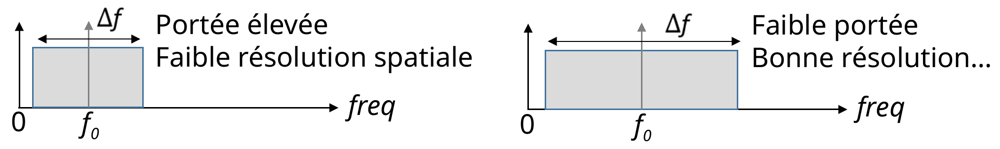
Compromis \(f_0\) & \(\Delta f\) à trouver en fonction de l’objectif visé (portée/résolution, détection/imagerie)
Radar pour l’auscultation de structures de génie civil
Des mesures de laboratoire aux mesures de terrain : le choix des fréquences
Approche expérimentale proposée : utiliser en laboratoire une maquette à échelle réduite et des fréquences radar plus élevées, que l’on dimensionne par invariance d’échelle par rapport au terrain :
\[ d_{max}^{lab} / \lambda_0^{lab} = d_{max}^{terrain} / \lambda_0^{terrain} \quad\Longleftrightarrow\quad d_{max}^{lab} \cdot f_0^{lab} = d_{max}^{terrain} \cdot f_0^{terrain} \]
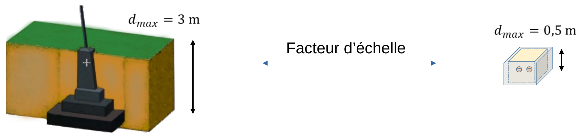
Terrain : \(d_{max} = 3\) m — Facteur d’échelle — Laboratoire : \(d_{max} = 0{,}5\) m
Radar pour l’auscultation de structures de génie civil
Les mesures impulsionnelles
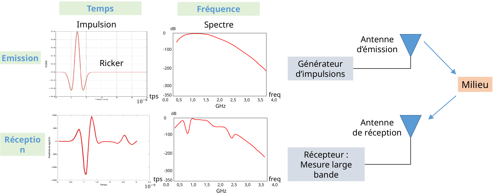
Avantages : relative simplicité matérielle (de l’émetteur/récepteur)… Rapidité d’acquisition des données.
Inconvénients : rapport signal sur bruit (RSB) limité car on émet et reçoit en une fois sur une large bande de fréquence…
Radar pour l’auscultation de structures de génie civil
Les mesures harmoniques (CWSF : Continuous Wave Step Frequency)
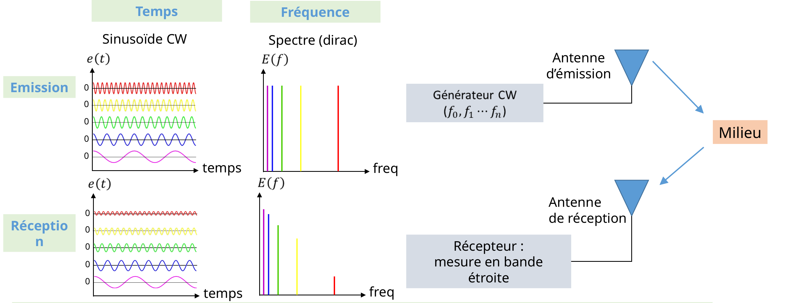
Avantages : maîtrise des signaux ; matériel de laboratoire (analyseur de réseau vectoriel) ; bon rapport signal sur bruit (RSB) car on émet et reçoit fréquence par fréquence (mesure en bande étroite). Inconvénient : durée d’acquisition des signaux…
Présentation du banc expérimental GPR
Radar pour l’auscultation de structures de génie civil
Dispositif expérimental envisagé
Données réelles
Émission/réception (via un VNA) des signaux déportée à l’extrémité de câbles RF…
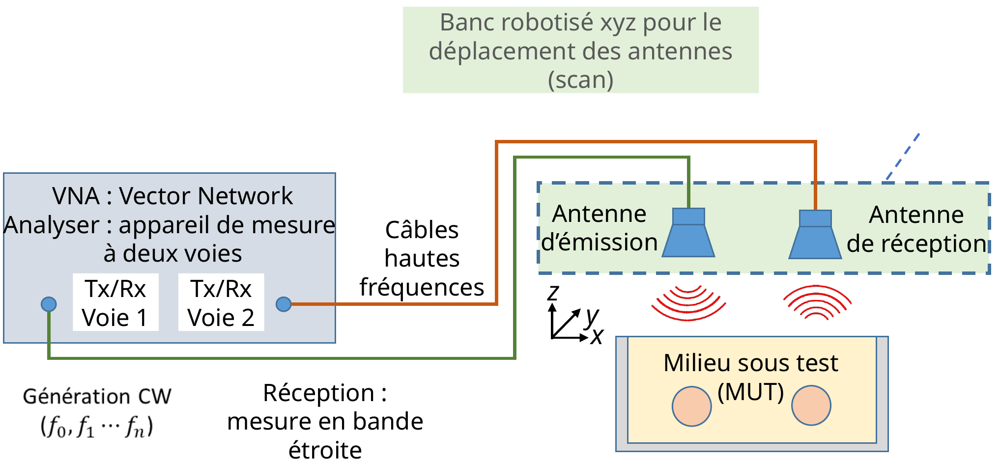
Radar pour l’auscultation de structures de génie civil
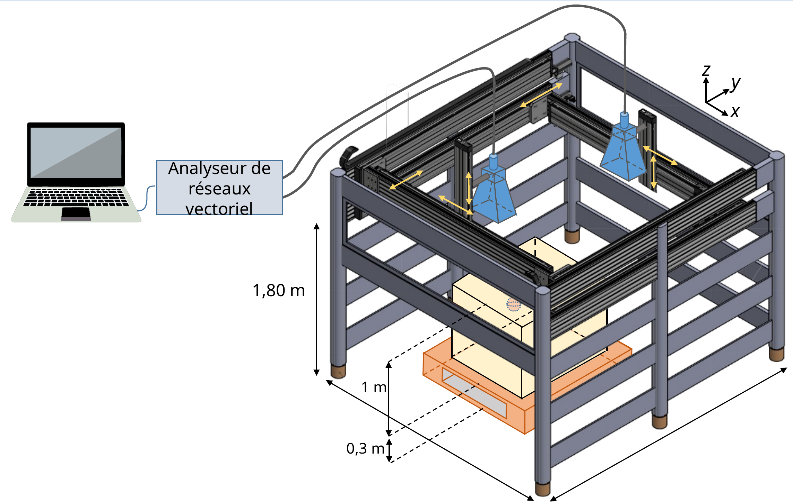
Radar pour l’auscultation de structures de génie civil
Données synthétiques
Simulations électromagnétiques basées sur la résolution des équations de Maxwell en 3D par une méthode de différences finies dans le domaine temporel (FDTD : finite difference in time domain).
Possibilités :
- Modélisation de géométries complexes.
- Modélisation fine des sols.
- Sources d’ondes et antennes variées.
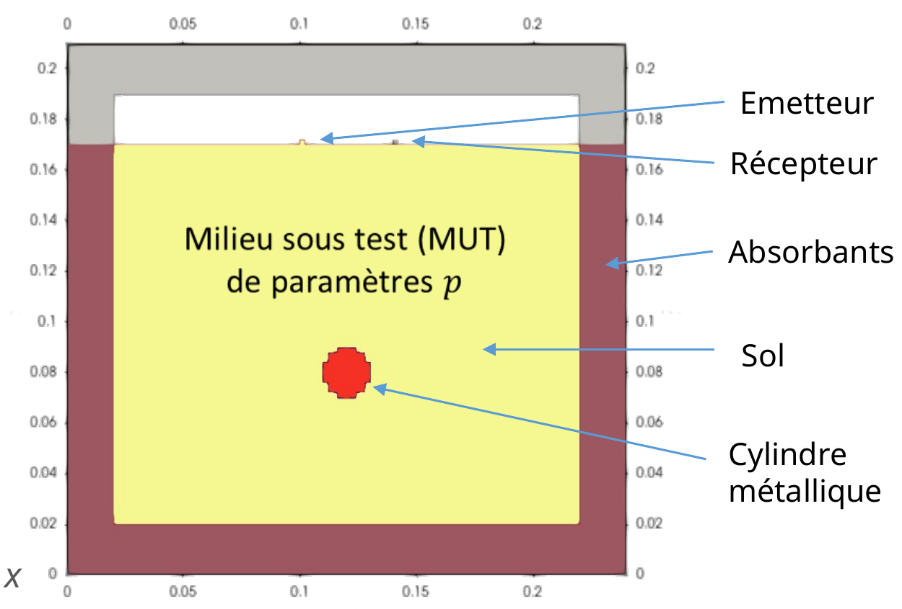
Radar pour l’auscultation de structures de génie civil
A scan : Exemple avec gprMax (post-traité)
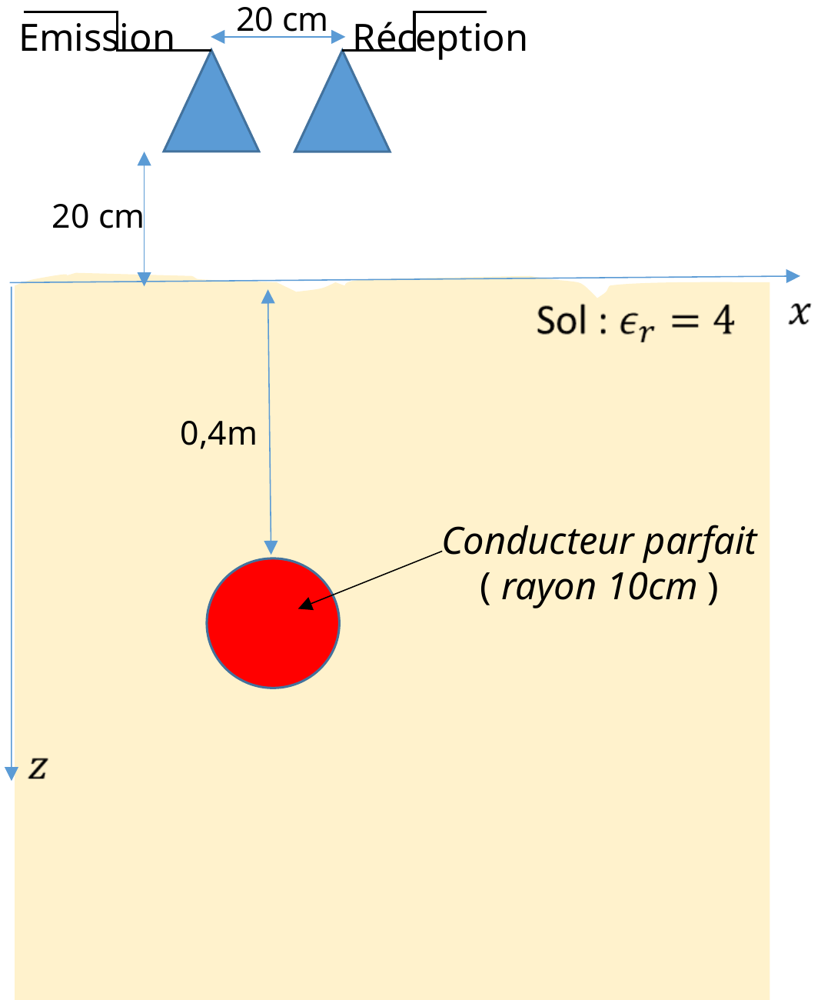
A scan : cylindre conducteur, mesures de \(H(f)\) pour \(f \in [\,0{,}5\ \text{GHz},\ 3\ \text{GHz}\,]\), \(\Delta f = 20\) MHz, A scan normalisé par rapport à son maximum
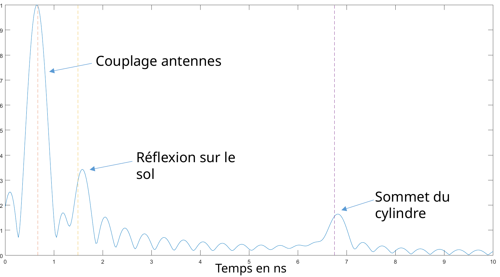
Remarque : problème des lobes secondaires (couplage entre antennes et réflexion sur le sol), masquage potentiel d’objets enfouis
Radar pour l’auscultation de structures de génie civil
A scan : Exemple de masquage
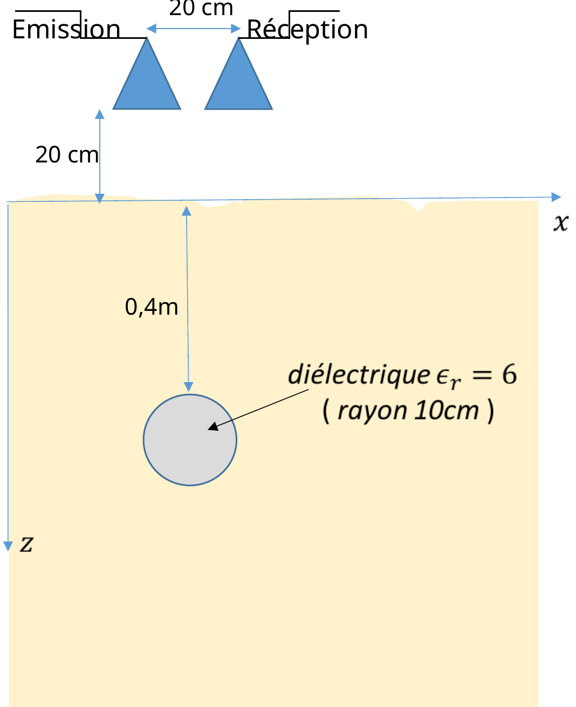
A scan : cylindre diélectrique, mesures de \(H(f)\) pour \(f \in [0{,}5\ \text{GHz},\ 3\ \text{GHz}]\), \(\Delta f = 20\) MHz, A scan normalisé par rapport à son maximum
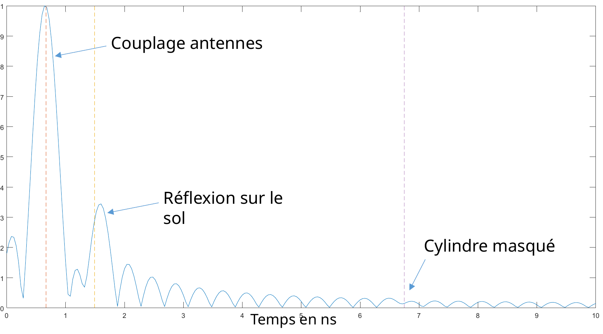
Radar pour l’auscultation de structures de génie civil
B scan (1/3) : collection de A scan obtenus en déplaçant les antennes
Condition sur le pas : \(\Delta x < \lambda_{min}/4\)
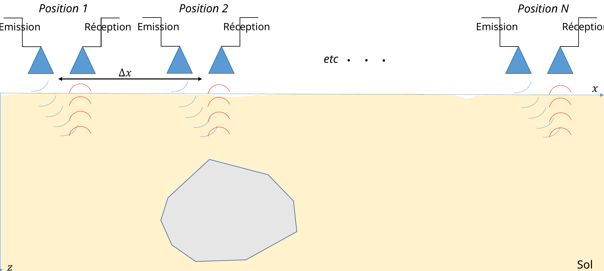
Radar pour l’auscultation de structures de génie civil
B scan (2/3) : Exemple avec gprMax
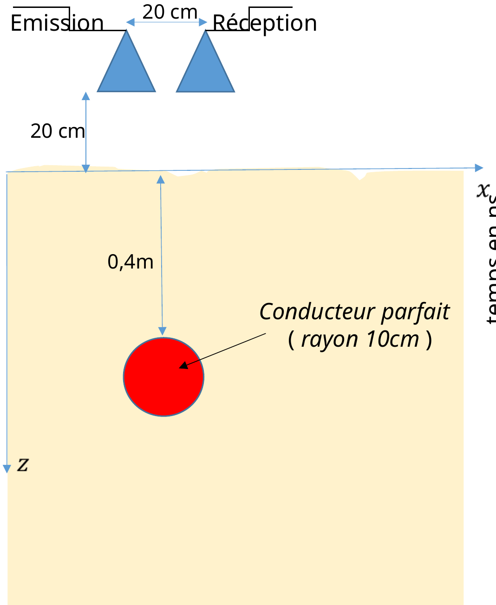
B scan : mesures de \(H(f)\) pour \(f \in [0{,}5\ \text{GHz},\ 3\ \text{GHz}]\)
Position initiale des antennes : 0,5 m — Position finale : 4,5 m
Pas : 2 cm, \(\Delta f = 20\) MHz
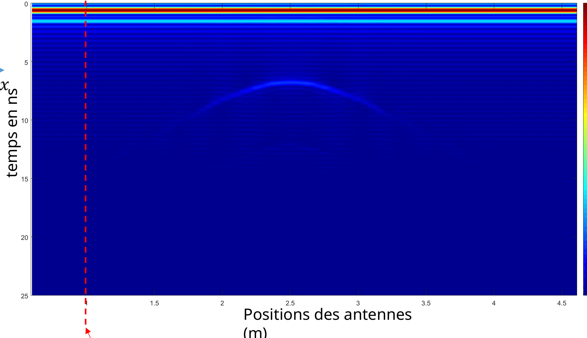
Radar pour l’auscultation de structures de génie civil
B scan (3/3) : même image en dB
B scan en dB : mesures de \(H(f)\) pour \(f \in [0{,}5\ \text{GHz},\ 3\ \text{GHz}]\)
Position initiale des antennes : 0,5 m — Position finale : 4,5 m
Pas : 2 cm, \(\Delta f = 20\) MHz
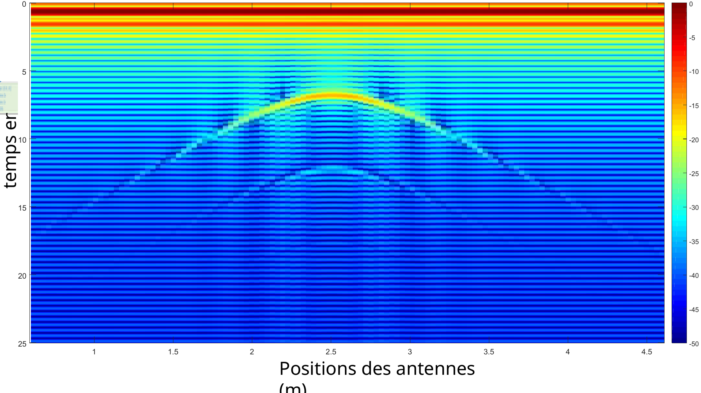
Problème : artefacts dus au couplage et à la réflexion sur le sol
Radar pour l’auscultation de structures de génie civil
Imagerie : algorithme Back Projection
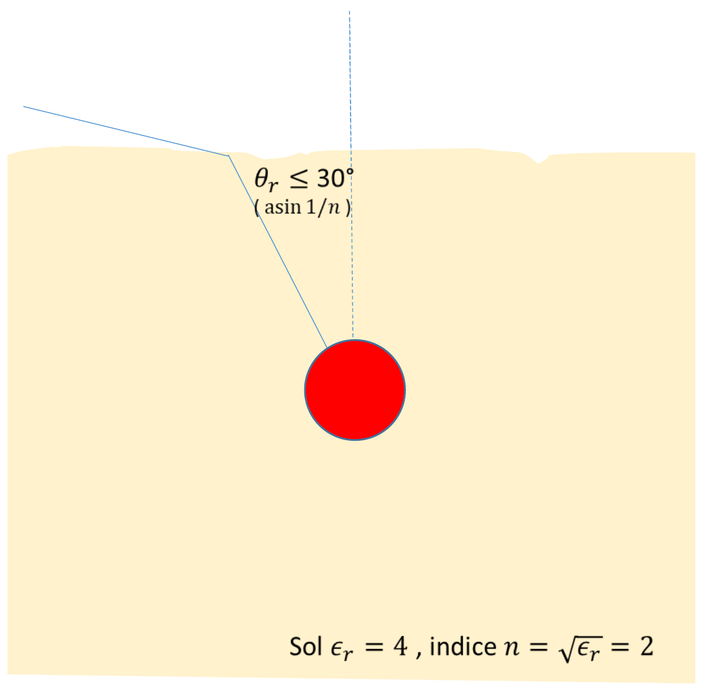
Angle limite 30° dans le sol (\(\varepsilon_r = 4\))
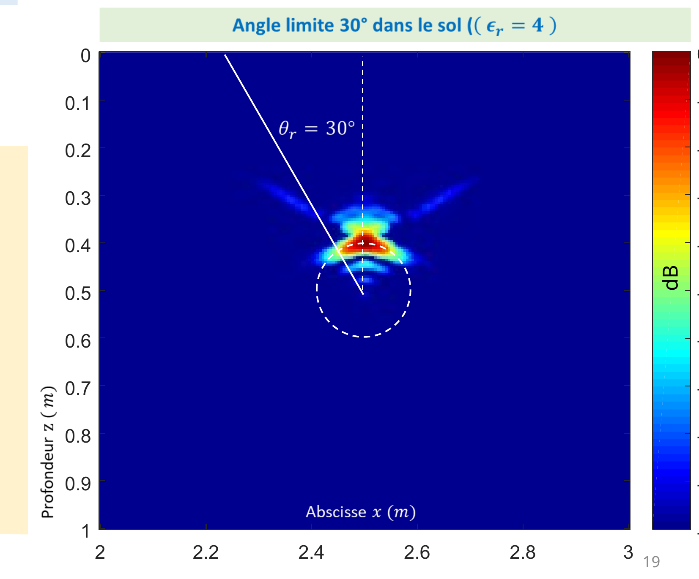
Démarche expérimentale
Introduction
La mise en place du banc expérimental nécessite de tester séparément chaque sous-système avant une vraie campagne GPR.
C’est la manière la plus sûre d’identifier où se trouvent les erreurs :
VNA → câbles → antennes → positionneurs → ensemble complet
Objectif
L’objectif n’est pas d’abord de « voir la cible », mais de vérifier que la chaîne de mesure est :
- fonctionnelle — chaque élément répond et opère dans sa plage nominale (fréquence, puissance, débattement mécanique)
- stable — la mesure ne dérive pas dans le temps (échauffement, bruit, connectique)
- répétable — une mesure refaite dans les mêmes conditions donne le même résultat
- géométriquement cohérente — les positions et orientations réelles correspondent à celles supposées par le modèle de mesure
Démarche générale
Une progression incrémentale, sous-système par sous-système :
- VNA seul
- Câbles et connecteurs
- Positionneurs
- Antennes séparées
- Paire bistatique (TX-RX)
Objectifs de la séquence M1
5 semaines pour :
- Découvrir le cadre et le contexte du projet banc GPR
- Prendre en main le VNA (analyseur de réseau vectoriel)
- Mener une première campagne de mesure
- Caractériser les cordons RF
- Aborder la mesure d’impédance et la programmation du VNA
Fonctionnement
- Compte rendu hebdomadaire
- Réunion hebdomadaire en distanciel
- Bilan mensuel en présentiel
Planning général
| Semaine | Thème | Réunion |
|---|---|---|
| 1 | Accueil à l’ENS | Ven. 16 oct., 14 h |
| 2 | Campagne de mesure 1 : VNA | Ven. 23 oct., 15 h |
| 3 | Sensibilité des Sii et cordons RF | Ven. 30 oct., 14 h |
| 4 | Mesure d’impédance, programmation du VNA | Lun. 9 nov., 10 h |
| 5 | Bilan de la séquence ENS | Jeu. 12 nov., 10 h (présentiel) |
Note
Attention : la réunion de la semaine 4 a lieu un lundi.
Semaine 1
Accueil à l’ENS
Mardi 13 octobre
9 h 30
Accueil par Éric dans le hall de l’ENS
14 h 00 – Distanciel
Présentation générale des missions :
- Cadre et contexte
- Mission majeure : banc GPR
- Missions annexes
- Gestion des commandes…
Les missions
Mission majeure
Banc GPR (Ground Penetrating Radar)
Banc expérimental de radar à pénétration de sol, instrumenté autour du VNA.
Missions annexes
- Impédance basse fréquence
- estimation de la permittivité
- application au béton
- Mesure RF de la permittivité
- développement d’une sonde
Mercredi 14 – Jeudi 15 octobre
- Installation du poste de mesure
- Prise en main du VNA
- Premières mesures
Astuce
Plan détaillé : répertoire TODO (à venir).
Vendredi 16 octobre
- Matin : préparation de la réunion hebdomadaire (template dans
reports_M1/template) - Après-midi, 14 h – 15 h : réunion hebdomadaire en distanciel
Livrable
Rapport déposé dans reports_M1 une heure avant la réunion (13 h).
Semaine 2
Campagne de mesure 1 : VNA
Campagne de mesure 1 : VNA
- Mesure de la puissance maximale du port 1 en fonction de la fréquence
- Mesure de la sensibilité en fonction de la fréquence, pour différentes FI
- Calcul de la dynamique
- Comparaison avec les spécifications constructeur
Livrables : compte rendu hebdomadaire
- réunion vendredi 23 octobre, 15 h
Semaine 3
Sensibilité des Sii et cordons RF
Sensibilité des Sii et cordons RF
- Sensibilité sur les Sii – comparaison avec la documentation
- Caractérisation des deux cordons RF :
- pertes d’insertion
- ROS
- stabilité de la phase
- dérive en température
Livrables : compte rendu hebdomadaire
-réunion vendredi 30 octobre, 14 h
Semaine 4
Mesure d’impédance et programmation
Mesure d’impédance et programmation du VNA
- Prendre connaissance de la mesure d’impédance
- Prendre en main la programmation du VNA (à partir d’un exemple)
Livrables : compte rendu hebdomadaire
- réunion lundi 9 novembre, 10 h
Semaine 5
Bilan de la séquence ENS
Bilan de la séquence
- Rédaction d’un rapport mensuel sur les activités réalisées
- Réunion mensuelle avec l’équipe :
- jeudi 12 novembre, 10 h 00
- en présentiel, IUT de Ville d’Avray
Calendrier des rendez-vous
| Date | Heure | Format | Objet |
|---|---|---|---|
| Mar. 13 oct. | 9 h 30 | Présentiel | Accueil à l’ENS |
| Mar. 13 oct. | 14 h | Visio | Présentation des missions |
| Ven. 16 oct. | 14 h | Visio | Réunion hebdo n°1 |
| Ven. 23 oct. | 15 h | Visio | Réunion hebdo n°2 |
| Ven. 30 oct. | 14 h | Visio | Réunion hebdo n°3 |
| Lun. 9 nov. | 10 h | Visio | Réunion hebdo n°4 |
| Jeu. 12 nov. | 10 h | Présentiel | Réunion mensuelle (IUT Ville d’Avray) |
Missions secondaires
Radar pour l’auscultation de structures de génie civil
Mesures de réflectométrie RF par sonde à effet de bout
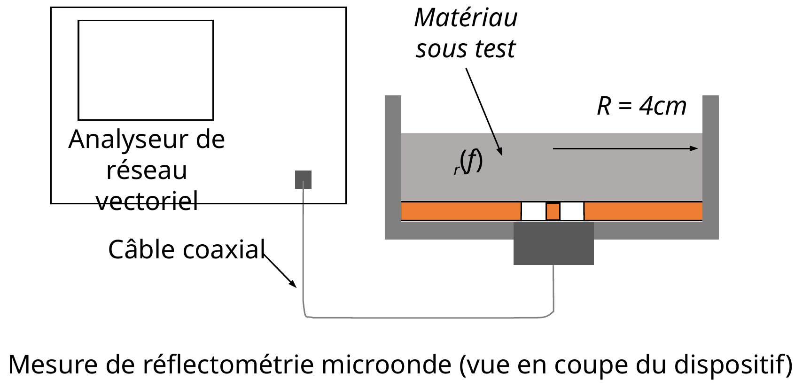
Modèle inverse de sonde coaxiale :
\[\varepsilon_r^{*} = \frac{c_1 S_{11} - c_2}{c_3 - S_{11}}\]
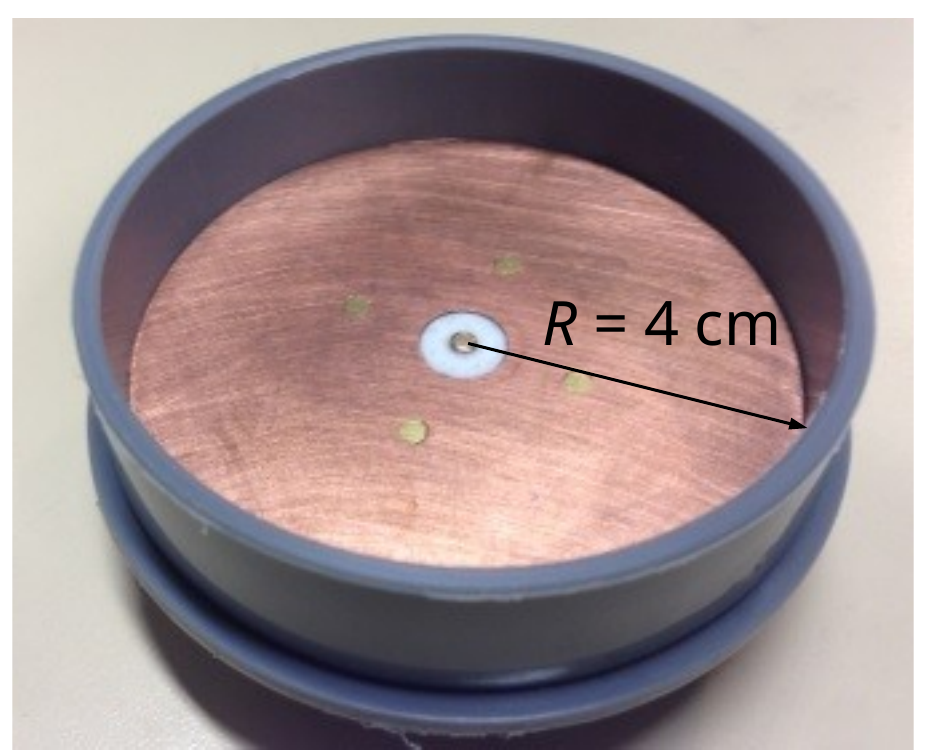
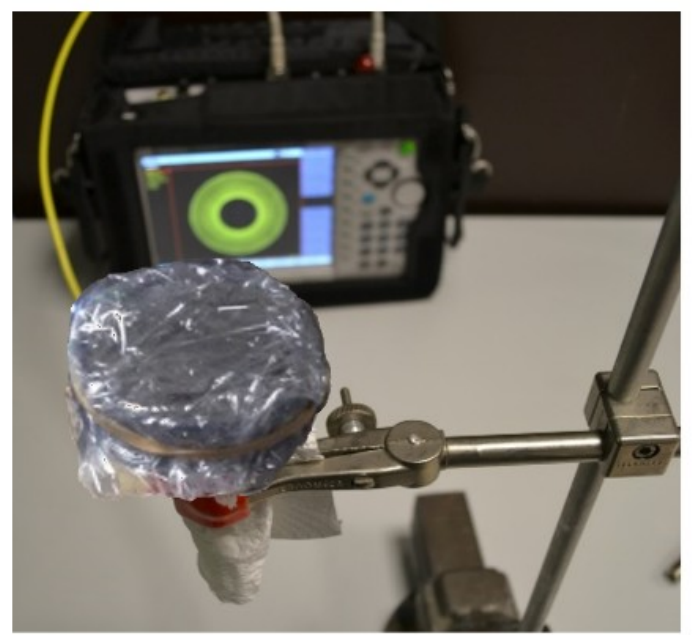
Radar pour l’auscultation de structures de génie civil
Mesures de réflectométrie RF par sonde à effet de bout géante
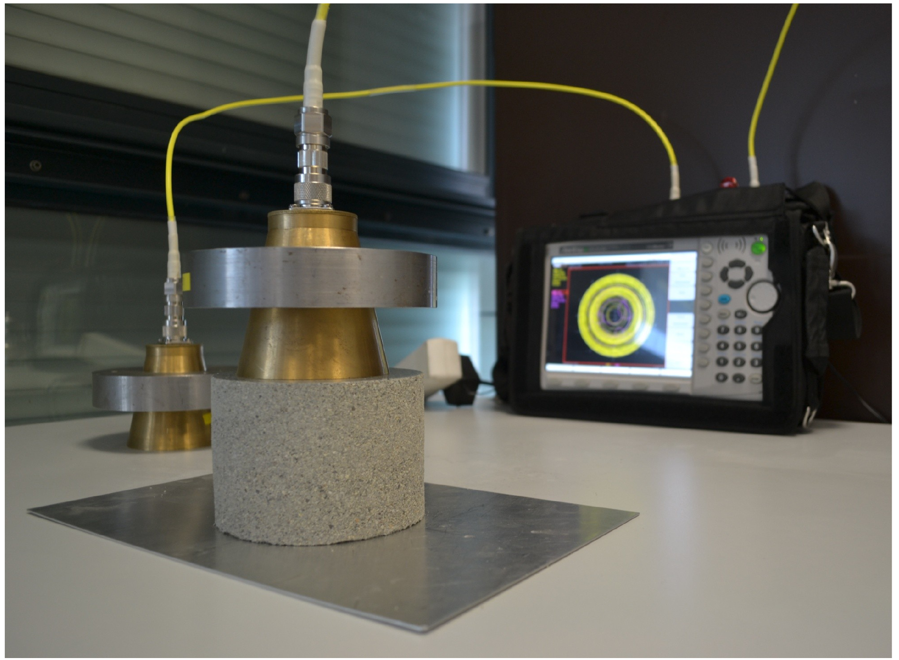
Photo de deux sondes à effet de bout géantes
Radar pour l’auscultation de structures de génie civil
Mesures basses fréquence : cellule 4 points pour mesure d’impédance
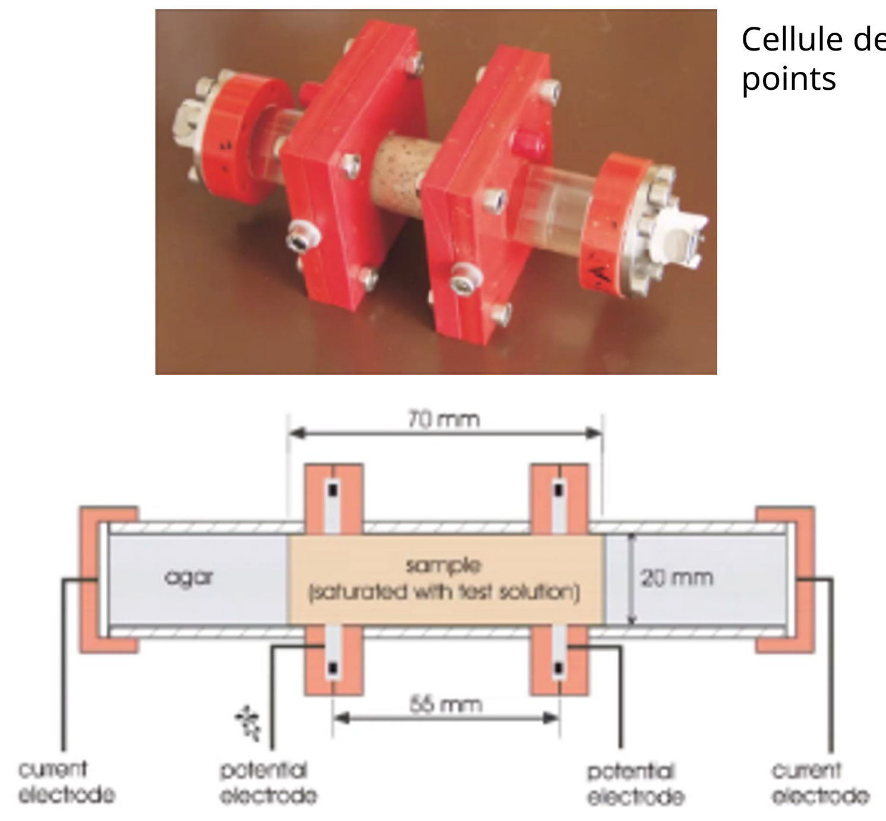
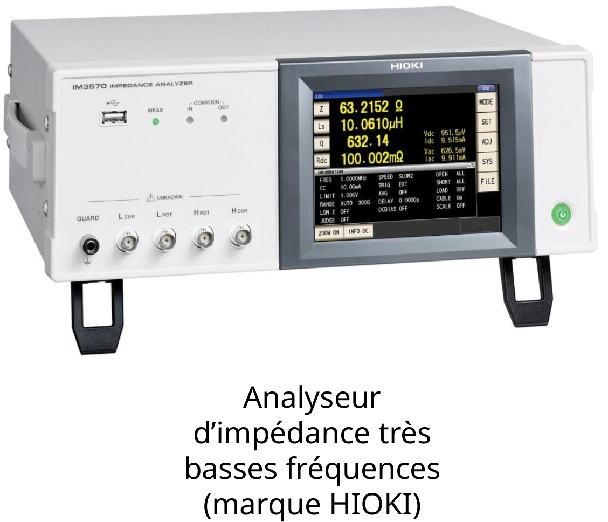
Radar pour l’auscultation de structures de génie civil
Mesures basses fréquence : dispositif 4 points à électrodes ECG pour mesure d’impédance
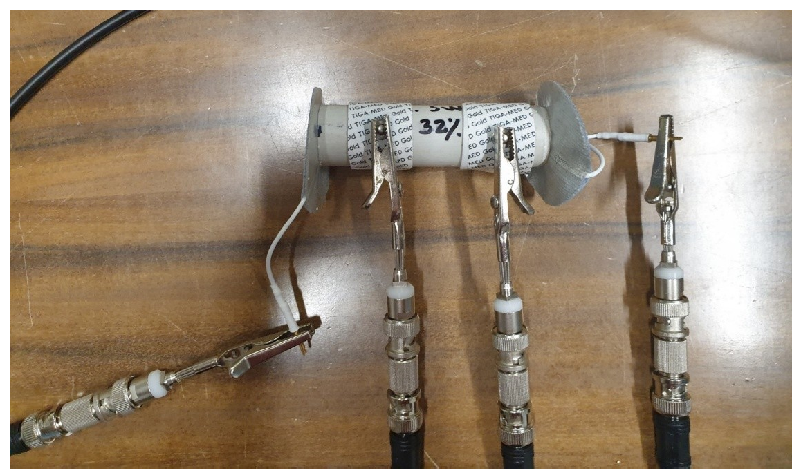
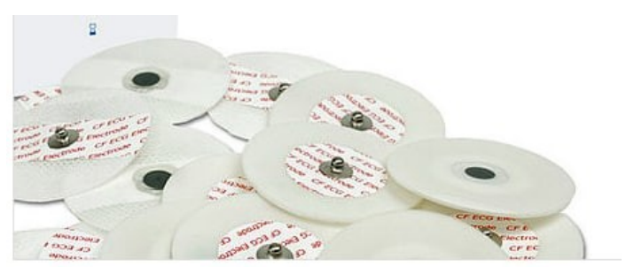
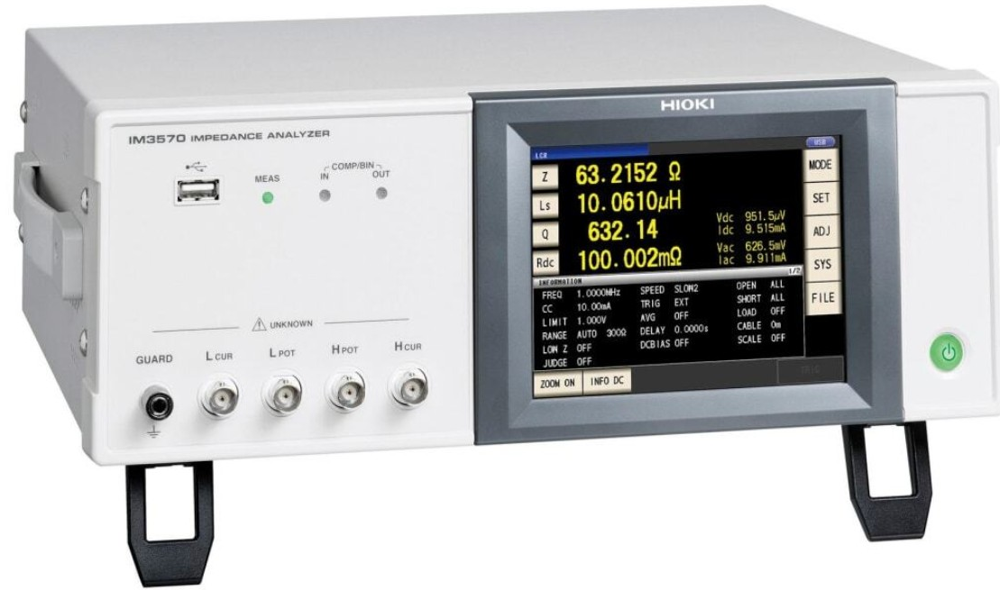